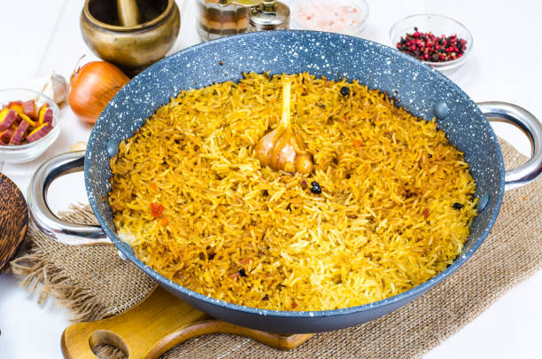

Biryani

This classic Indian blend of rice and chicken has more variants than any other Indian dish. Traditionally, this dish is prepared by marinating chicken or mutton in curd, and fragrant spices are mixed with rice then slow-cooked for hours. What keeps this dish interesting is the specific modifications made for various regions in India. Some keep it classic while some resort to mixing the rice with a pre-cooked gravy for the flavorsome moist appeal in the dish and then add the meat.
Ingredients
- 500 Gram Chicken legs
-
For the marinade:
- 1 tsp Red chilli powder
- 2 tsp Ginger-garlic paste
- 1/2 cup Yogurt
- 1/2 tsp Turmeric powder
- 1 tsp Coriander powder
- 1 tsp Garam masala powder
- 1 1/2 tsp Salt
- A pinch of Saffron
- 1/2 cup Milk
- 2 cups Water
- 5 Cardamoms
- 3 cloves
- 2 Mace
- 5 Black peppercorn
- 1/2 tsp Salt
- 1 cup Rice (long grain, washed basmati rice)
- 1 tbsp Ghee
- 1 tbsp Coriander leaves, chopped
- 2 tbsp Fried onion
- 3 Almonds, chopped
How to make Biryani
- First mix the saffron in half a cup of milk and keep aside.
- Now in a bowl, add all the marination ingredients and coat the chicken pieces well with it. Let it marinate for about 4 hours
- Now to prepare the rice, put all the ingredients given except saffron and milk, in warm water along with washed rice.
- Cook for 10-15 minutes.
- Heat some ghee in a pan and add all the marinated chicken followed by cooked rice in it. Top with saffron milk, coriander leaves, fried onion and chopped almonds. Mix well.
- Let it cook on a low heat (on dum, in it's own heat) covered with foil for about 20-30 minutes (till the water evaporates and chicken and rice are fully cooked).
- Open the dum when cooked, mix the rice well. You can drizzle with some rose water and serve hot.
Back to top
Home